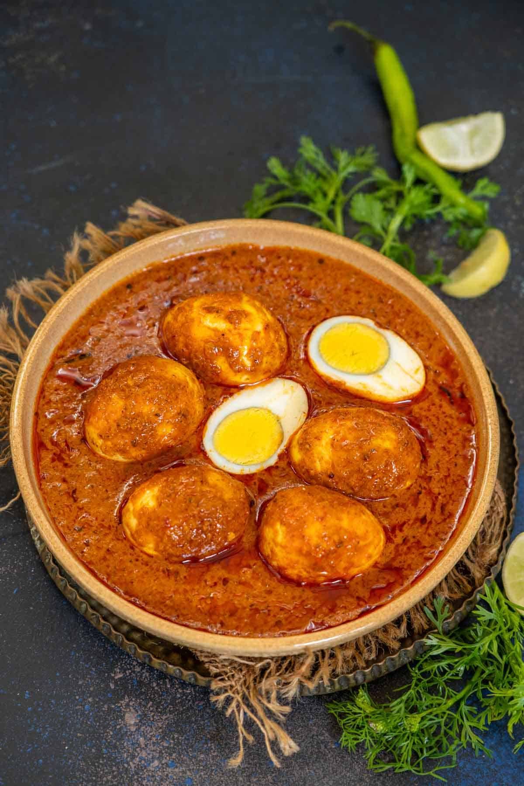

EGG CURRY 🥚

Description
Goan Egg Curry is a comforting dish made with boiled eggs simmered in a spiced coconut-based gravy.
It's mildly tangy, rich in flavor, and pairs perfectly with steamed rice or bread rolls (pav).
Ingredients
Curry
- 6 boiled eggs, shelled
- 2 onions, sliced
- 2 tomatoes, chopped
- 1 tsp turmeric powder
- 1 tsp salt (or to taste)
- 2 tbsp oil
- 1 1/2 cups water
Masala Paste
- 3/4 cup grated coconut
- 4-5 dried red chilies
- 1 1/2 tsp coriander seeds
- 1/2 tsp cumin seeds
- 1/2 tsp black peppercorns
- 3 cloves
- 1/2-inch cinnamon stick
- 3 cloves garlic
- 1/2-inch ginger
- 1 tbsp tamarind pulp
STEPS
- Masala: Dry roast coconut, red chilies, coriander seeds, cumin, peppercorns, cloves, and
cinnamon until aromatic. Cool, then grind with garlic, ginger, and tamarind pulp into a smooth paste.
- Cook Curry: Heat oil, sauté onions until golden. Add tomatoes and cook until soft. Stir in
turmeric and salt.
- Add Masala: Add the masala paste and fry for 3-4 minutes. Pour in water, bring to a boil,
and simmer for 8-10 minutes.
- Add Eggs: Gently add boiled eggs to the curry and simmer for another 5 minutes to absorb
the flavors.
- Serve: Serve hot with steamed rice or pav.

HOME